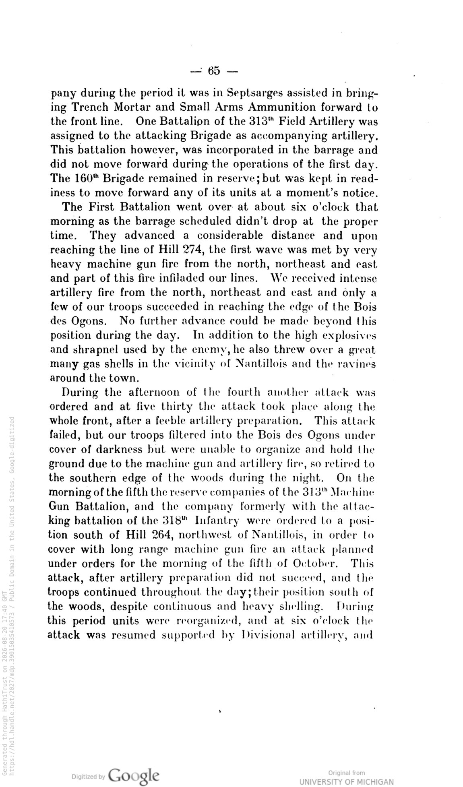
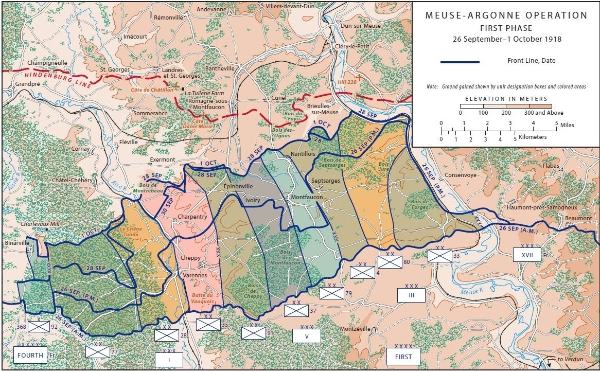
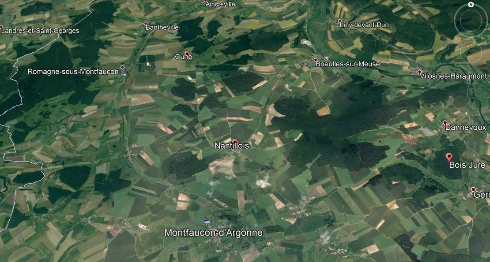
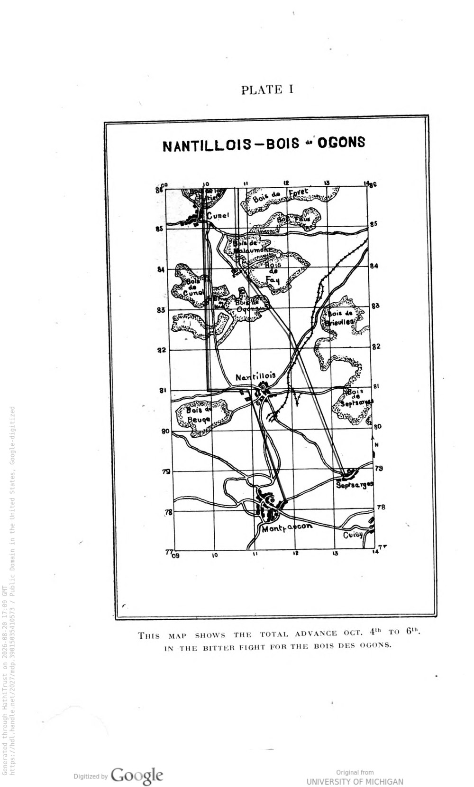
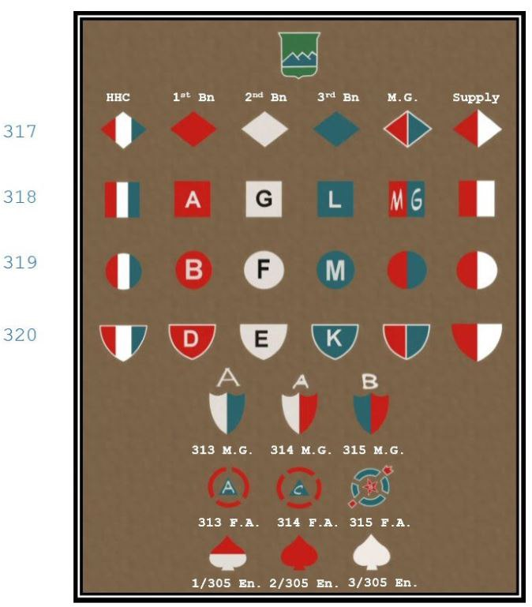
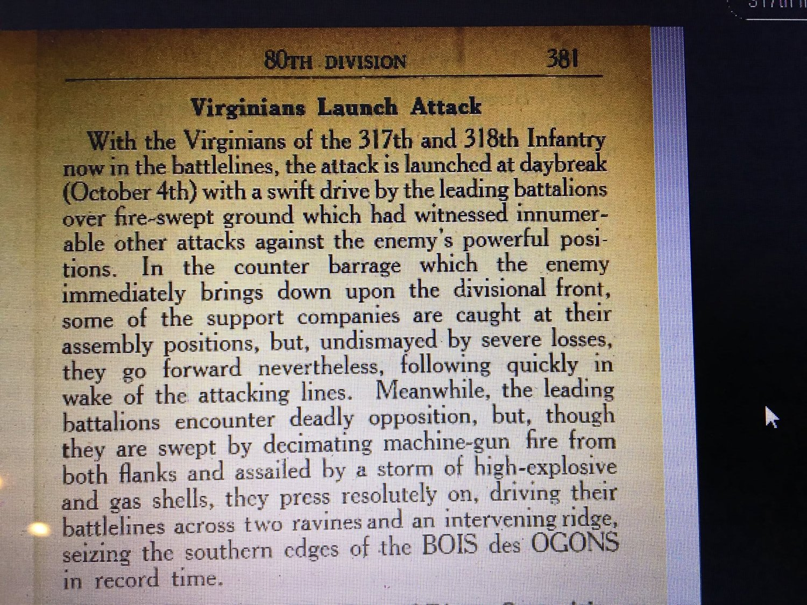
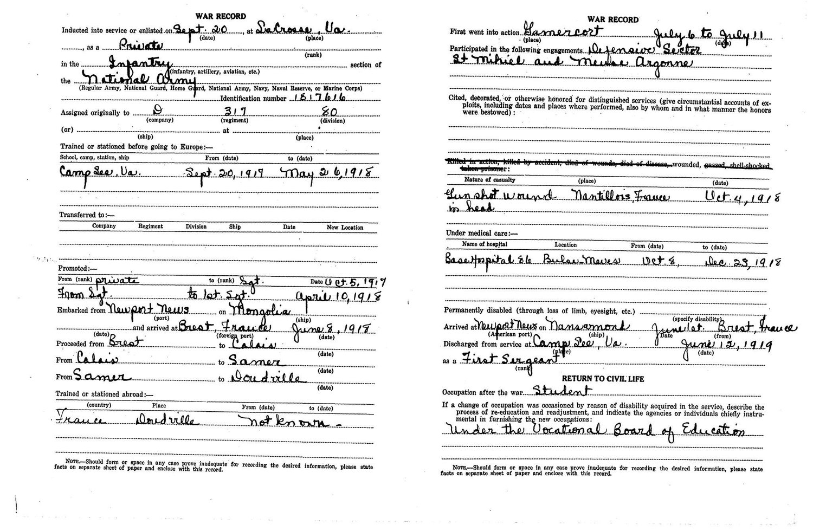
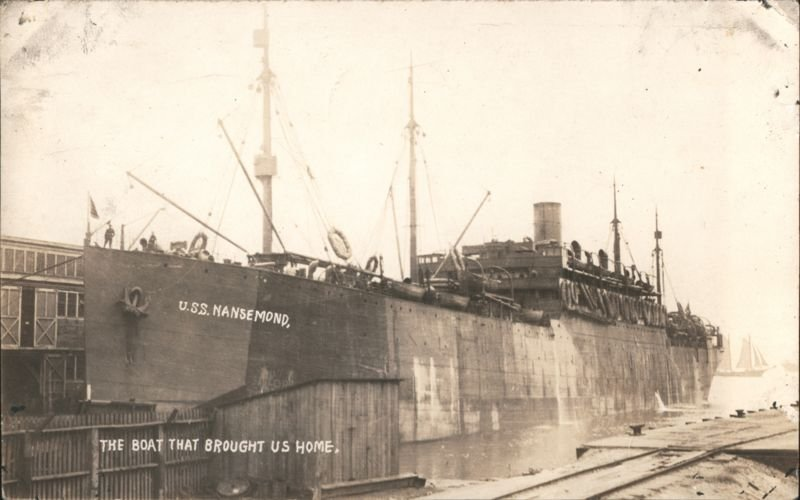

Twelve · The documents
Reference
The papers themselves, gathered in one place for anyone who wants to look rather than be told.
Everything below appears somewhere in the narrative. It is collected here because a reader checking a detail should not have to remember which chapter it was in.
The three draft cards, 5 June 1917
One precinct, one registrar, one morning. Read across, they are the best single document of this family before the war.


David’s own account of his war, 1922


The 317th’s own history


Maps





A modern map, not a period document.
Markings and insignia

Provenance not yet confirmed.


The 80th Division


The four ships
| Ship | Voyage | Who |
|---|---|---|
| SS Mongolia | Newport News → Brest, arr. 8 Jun 1918 | David, out |
| USS Pastores | Newport News, sailed noon 18 Jul 1918 | Alexander, out |
| USS Nansemond | Brest 20 May 1919 → arr. US 1 Jun 1919 | David, home |
| USAT Cantigny | Antwerp → Hoboken, arr. 1 Sep 1921 | Alexander, home |




How a rifle company was organised
A full chart of the 1918 American rifle company — every rank, every section, every weapon — is on a separate page.